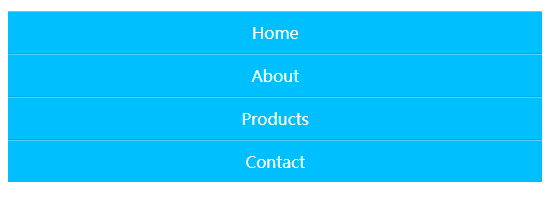
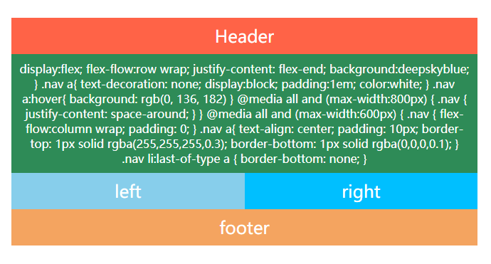

8 Horizontal Menu
2019/6/23
水平菜单栏
有一些简单的动画，在别的地方看见的，就照着做了下
1 | /* 主要也是用的 :before 伪元素来修饰图标 */ |

7 Responsive Design
2019/6/21
响应式卡片

1 | /* 图片使用绝对定位 */ |
响应式部分
1 | @media (max-width: 1000px) { |

1 | @media (max-width: 768px) { |

1 | @media (max-width: 500px) { |

6 CSS 3d Layered Image
2019/6/19
鼠标 hover 出现特效
1 | /* 使用skew产生形变 */ |
1 | <img |
1 | /* 每一张图片transform不同距离 */ |

5 Thanos Snap Disperison
2019/6/18
灭霸响指消失特效（有点 low）
1 | /* 原理就是使用一张noise.png的噪点图覆盖原图 */ |

4 Hover expand menn
2019/6/10
简单的菜单栏
使用:target伪类来实现点击、未使用js
1 | /* |

1-3 flex布局简单尝试
2019/5/30
flex布局1
1 | /* |
flex布局2
flex布局3
0 Glowing Border
渐变色的边框
2019/5/25
该方法的巧妙之处是使用了为元素:after和:before来添加边框
1 | .container:before { |